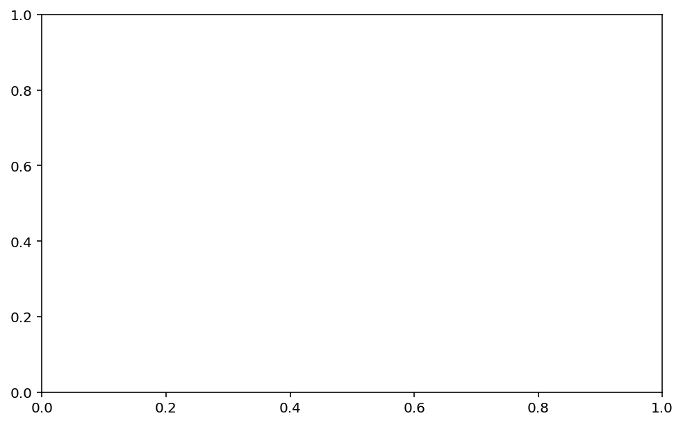
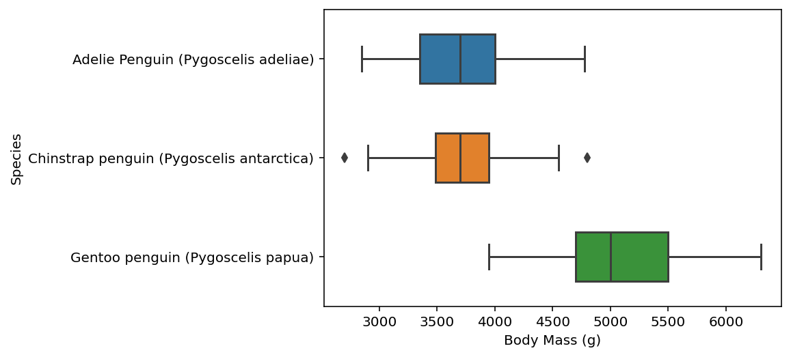
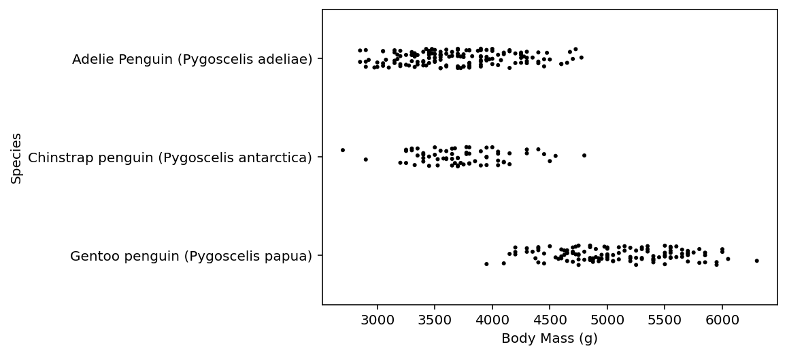
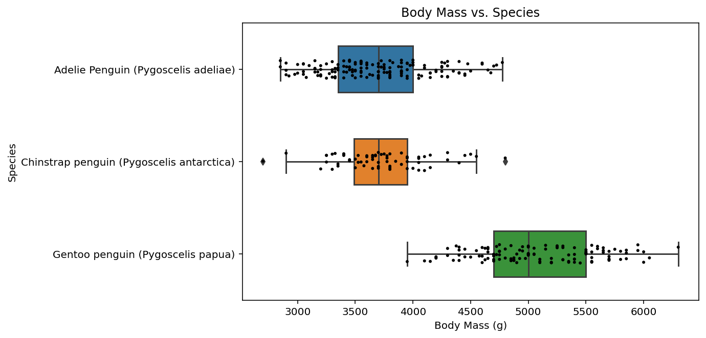

import pandas as pd
url = "https://raw.githubusercontent.com/PhilChodrow/PIC16B/master/datasets/palmer_penguins.csv"
penguins = pd.read_csv(url)In this blog post, we will explain how to construct an interesting data visualization of the Palmer Penguins data set.
First, we read the data…
Let’s see what this data holds!
using .head() will display the first 5 rows of the data frame.
penguins.head()| studyName | Sample Number | Species | Region | Island | Stage | Individual ID | Clutch Completion | Date Egg | Culmen Length (mm) | Culmen Depth (mm) | Flipper Length (mm) | Body Mass (g) | Sex | Delta 15 N (o/oo) | Delta 13 C (o/oo) | Comments | |
|---|---|---|---|---|---|---|---|---|---|---|---|---|---|---|---|---|---|
| 0 | PAL0708 | 1 | Adelie Penguin (Pygoscelis adeliae) | Anvers | Torgersen | Adult, 1 Egg Stage | N1A1 | Yes | 11/11/07 | 39.1 | 18.7 | 181.0 | 3750.0 | MALE | NaN | NaN | Not enough blood for isotopes. |
| 1 | PAL0708 | 2 | Adelie Penguin (Pygoscelis adeliae) | Anvers | Torgersen | Adult, 1 Egg Stage | N1A2 | Yes | 11/11/07 | 39.5 | 17.4 | 186.0 | 3800.0 | FEMALE | 8.94956 | -24.69454 | NaN |
| 2 | PAL0708 | 3 | Adelie Penguin (Pygoscelis adeliae) | Anvers | Torgersen | Adult, 1 Egg Stage | N2A1 | Yes | 11/16/07 | 40.3 | 18.0 | 195.0 | 3250.0 | FEMALE | 8.36821 | -25.33302 | NaN |
| 3 | PAL0708 | 4 | Adelie Penguin (Pygoscelis adeliae) | Anvers | Torgersen | Adult, 1 Egg Stage | N2A2 | Yes | 11/16/07 | NaN | NaN | NaN | NaN | NaN | NaN | NaN | Adult not sampled. |
| 4 | PAL0708 | 5 | Adelie Penguin (Pygoscelis adeliae) | Anvers | Torgersen | Adult, 1 Egg Stage | N3A1 | Yes | 11/16/07 | 36.7 | 19.3 | 193.0 | 3450.0 | FEMALE | 8.76651 | -25.32426 | NaN |
Now, suppose we wanted to create a plot that shows the distribution of the body mass based on the penguin’s species.
We will import the correct packages for plotting…
matplotlib is a plotting library and seaborn is a data visualization library based on matplotlib. the following code is how we import these packages:
from matplotlib import pyplot as plt
import seaborn as snsWe first create our empty plot using pyplot…
we use plt.subplots() as described here: https://matplotlib.org/stable/api/_as_gen/matplotlib.pyplot.subplots.html
the method returns two variables “figures” and “axes”, which we store under fig and ax, respectively. our first argument for plt.subplots() is 1 because we want to create 1 subplot. we also specify the size of our figure using the figsize argument: the first number represents how wide and the second number represents how tall the plot will be.
fig, ax = plt.subplots(1, figsize = (8,5))
Then, we use sns.boxplot() to plot “body mass” split along different species…
here, we call our penguins data using data = penguins and we set our x-axis data to draw from the “Body Mass (g)” column and y-axis to draw from the “Species” column. we will also set width = 0.5, which controls the size of the boxes. lastly, we will store this result under fig, which we created earlier with matplotlib.
for further documentation: https://seaborn.pydata.org/generated/seaborn.boxplot.html
fig = sns.boxplot(data = penguins, x="Body Mass (g)", y="Species", width=0.5)
For funsies, we will also produce the strip plot…
the intention of adding a strip plot is to see the spread of the individual data points, thus we utilize sns.stripplot(). we use color = "black" to make the dots black and we set size = 3 to reduce the size of the dots.
for further documentation: https://seaborn.pydata.org/generated/seaborn.stripplot.html
fig = sns.stripplot(data = penguins, x="Body Mass (g)", y="Species", color = "black", size = 3)
Combine the two plots with a title and a figure caption…
now, for our final step, we combine the previous three code chunks, but we add an extra line using ax.set_title() to create a title for our plot. remember that ax was formed when we originally created our plot using matplotlib and represents our “axes”.
fig, ax = plt.subplots(1, figsize = (8,5))
ax.set_title("Body Mass vs. Species")
fig = sns.boxplot(data = penguins, x="Body Mass (g)", y="Species", width=0.5)
fig = sns.stripplot(data = penguins, x="Body Mass (g)", y="Species", color = "black", size = 3)